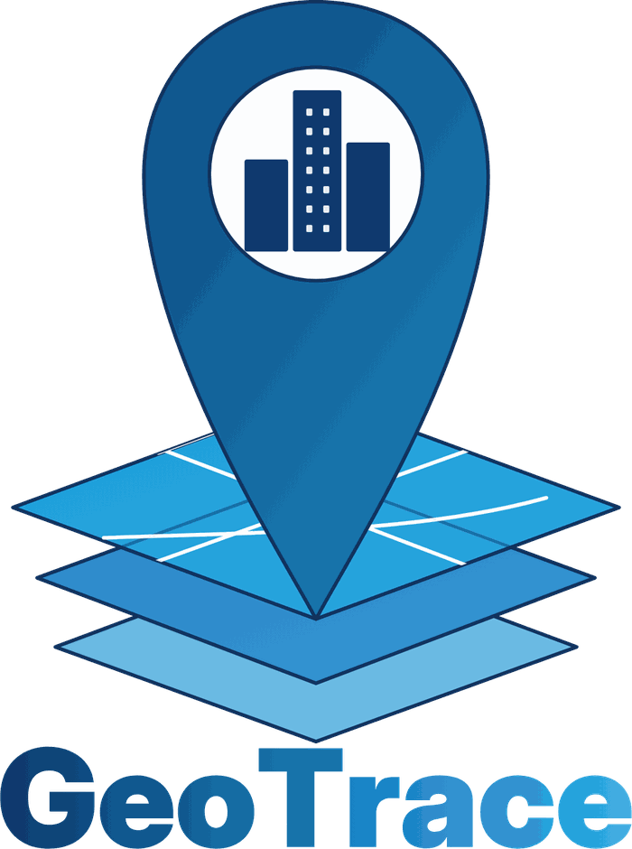

Cliquez sur la carte pour tracer.
Maquette 3D
Placez sur la carte la maquette exportée de Revit, puis calez-la avec des points GPS.
Ouvrir depuis Nextcloud
Lien d’un fichier .ifc ou .glb, ou d’un dossier qui en contient un.
Export Revit : Fichier, Exporter, IFC. L’IFC 2x3 ou 4 convient. Les très gros fichiers (plus de 100 Mo) peuvent être lents.
Calage GPS
Photos par jour

Vos photos de chantier, replacées sur la carte.
GeoTrace lit la position et la direction de chaque photo, puis la dessine là où elle a été prise.
Déposez ici un dossier, des photos ou un ZIP
Dossier du PC, dossier Nextcloud synchronisé ou ZIP téléchargé depuis Nextcloud. Les sous-dossiers sont lus.
Ouvrir un lien de partage Nextcloud
Fonctionne quand GeoTrace est installé sur le serveur Nextcloud ou autorisé par celui-ci. Sinon, utilisez le dossier synchronisé ou le ZIP.
Application GeoTrace de STURNO, pour le suivi des chantiers de réseaux.
Les photos restent sur votre ordinateur.